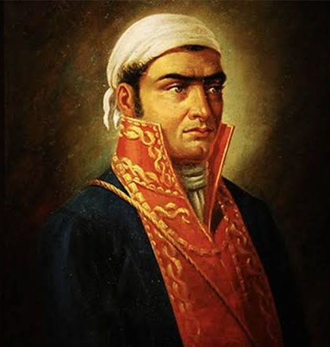
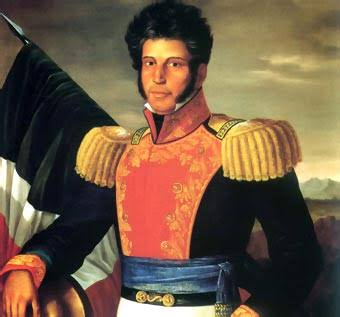

Personajes Principales
1753 - 1811

Miguel Hidalgo y Costilla
Conocido como el Padre de la Patria. Cura erudito e ilustrado que encabezó el levantamiento popular en 1810.
1765 - 1815
José María Morelos y Pavón

Conocido como el "Siervo de la Nación", fue un sacerdote, militar y político novohispano que asumió el liderazgo de la Guerra de Independencia de México tras la muerte de Miguel Hidalgo.
1768 - 1829

Josefa Ortiz de Domínguez
La Corregidora de Querétaro. Pieza clave de la Conspiración de Querétaro que avisó a los insurgentes que la trama había sido descubierta, adelantando el inicio de la lucha.
1782 - 1831
Vicente Guerrero

General que mantuvo viva la chispa de la resistencia insurgente en las montañas del sur y pactó la paz para lograr la consumación independentista.